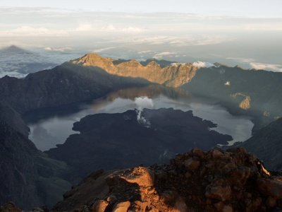
Maskonury i czarne plaże, to nie jest przypadkowe zestawienie. Jest takie miejsce w Islandii, które łączy oba te zjawiska. Okolice Vík í Mýrdal na południu Islandii są idealnym miejscem, żeby doświadczyć wspaniałych, czarnych wulkanicznych piasków i obserwować maskonury w ich naturalnym środowisku. Przeglądając fotografie z Islandii, oczami wyobraźni widziałam siebie fotografującą te małe, urocze ptaszki. Moja radość była ogromna, gdy mogłam je ujrzeć w realu i zrobić swoje własne zdjęcia. W moim subiektywnym odczuciu, maskonury zaraz obok lodowca, były dla mnie kwintesencją tego wyjazdu.
Maskonury – symbol Islandii
Ludzie nazywają je różnie: Morską Papugą, Morskim Klaunem a nawet porównują je do pingwinów, aczkolwiek z tymi ostatnimi nie mają nic wspólnego. Te niewielkie ptaszki można poznać po biało czarnym upierzeniu, czerwonych nóżkach, pięknym wielobarwnym dziobie i smutnych oczkach. Mowa oczywiście o maskonurach – symbolu Islandii. Jego podobizna zdobi kartki pocztowe, breloki, magnesy, kubki a nawet ubrania. Co zadziwiające, ta ikona wyspy, jest również przysmakiem jej mieszkańców. Podobno smakuje jak kaczka. Co by się nie działo, na moim talerzu by nie wylądował.
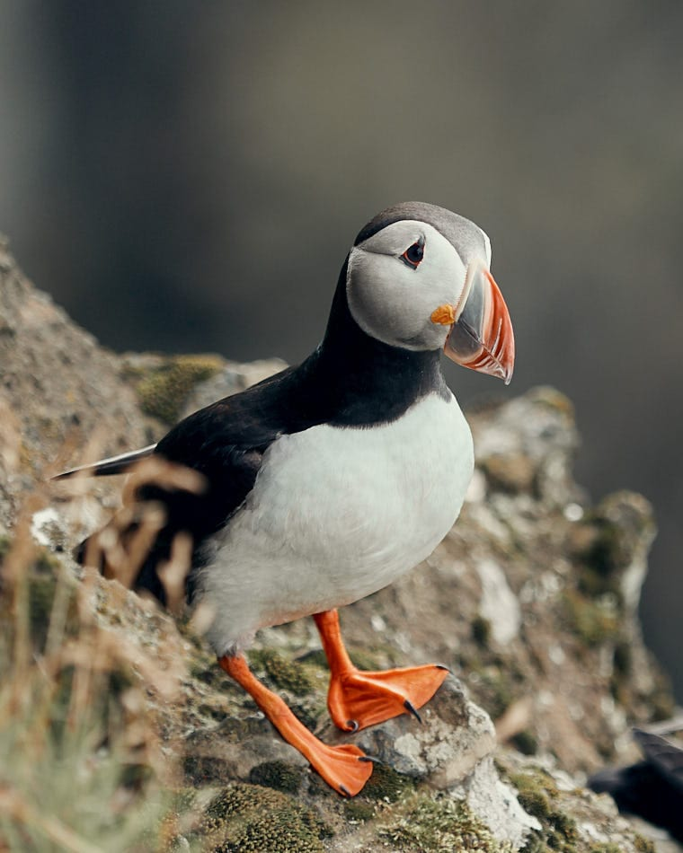

Maskonury to ptaki morskie. Około 8 miesięcy spędzają na wodzie, a na ląd powracają w okresie lęgowym, mniej więcej od maja do września. Na Islandię w tym okresie przybywa ponad połowa całej populacji tych ptaków. Można je również spotkać na Grenlandii, Wyspach Owczych, w Skandynawii, Danii a nawet Irlandii Północnej. Puffiny wyglądają bardzo niepozornie, ale to mali mocarze. Są doskonałymi pływakami i potrafią nurkować nawet do 60 m. Ich małe skrzydełka rozwijają prędkość około 80 km/h , czyli machają nimi nawet 400 razy na minutę !!! O tym, by spotkać maskonura marzą chyba wszyscy przybywający na Islandię. Dla mnie to również był must see tego wyjazdu. W tym celu udaliśmy się na półwysep Dyrhólaey, który jest znany z kolonii lęgowych puffinów na południu wyspy. Dla mnie był to fotograficzny raj 🙂 . Ptaki nie są płochliwe i można się było zbliżyć do nich na kilka metrów. Ważne jest żeby przy tym zachować ostrożność. Skaliste zbocza są bardzo strome, więc zdrowy rozsądek w biegu po fotograficzne trofeum w postaci zdjęcia puffina jest jak najbardziej wskazany. Wybierając się na Islandię trzeba pamiętać, że w okresie godowym od 1 maja do 25 czerwca, dostęp do półwyspu jest w całości zamknięty dla turystów
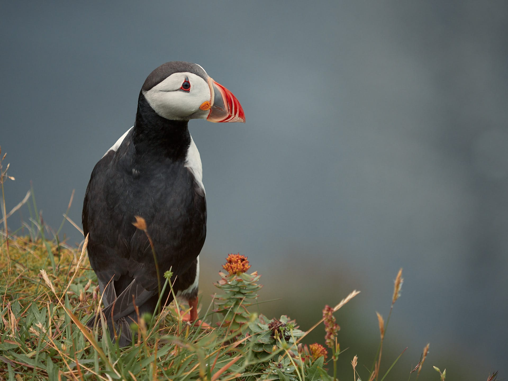
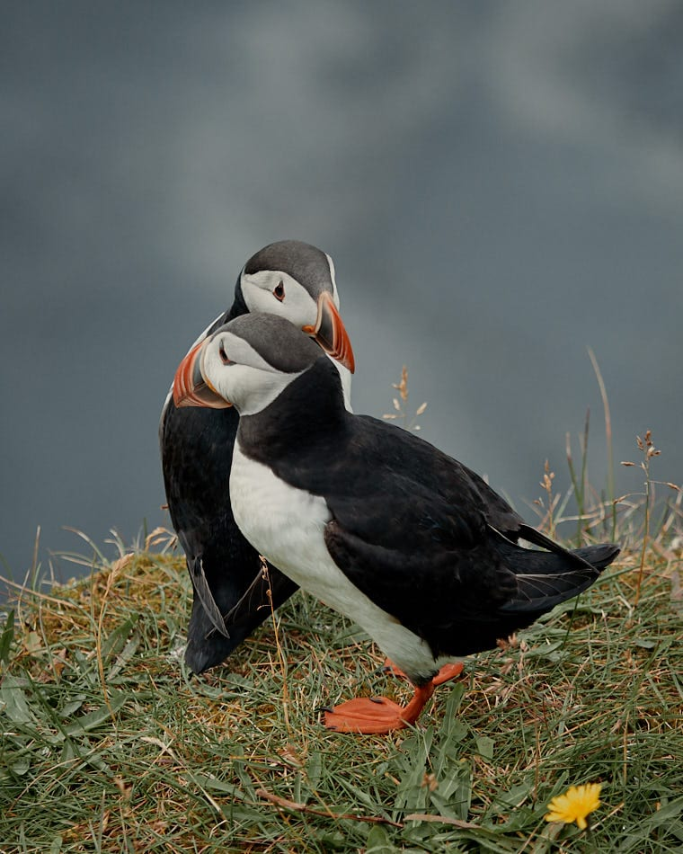
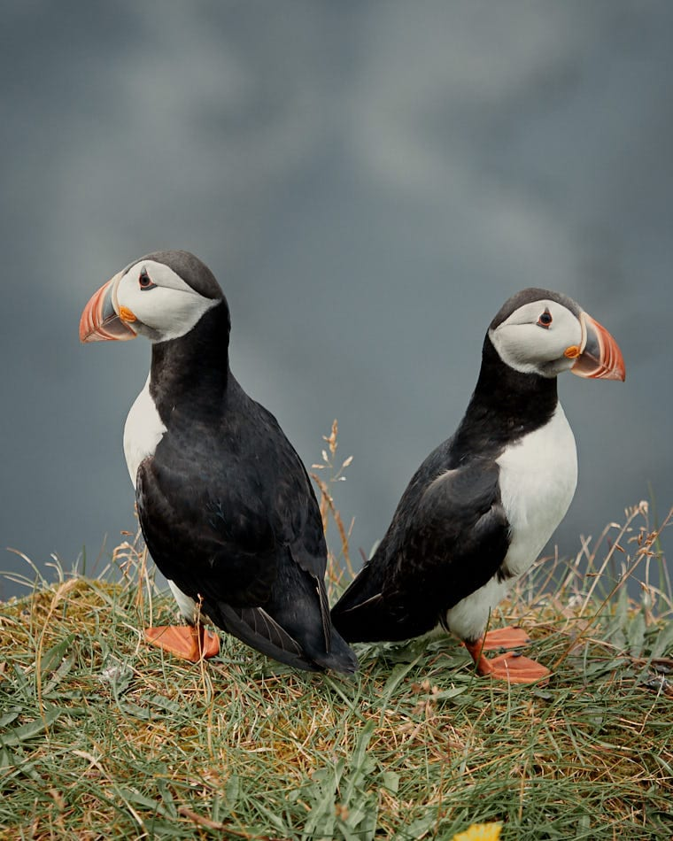
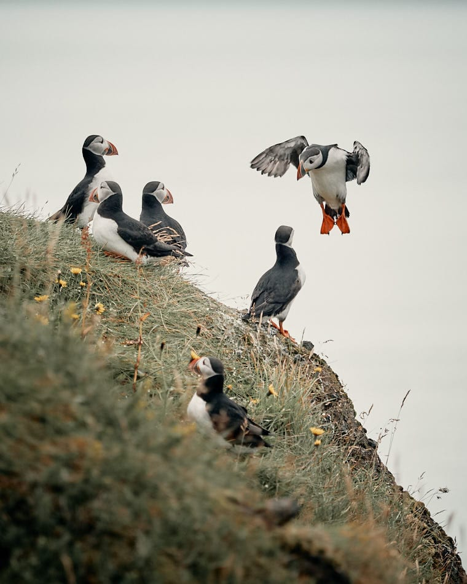
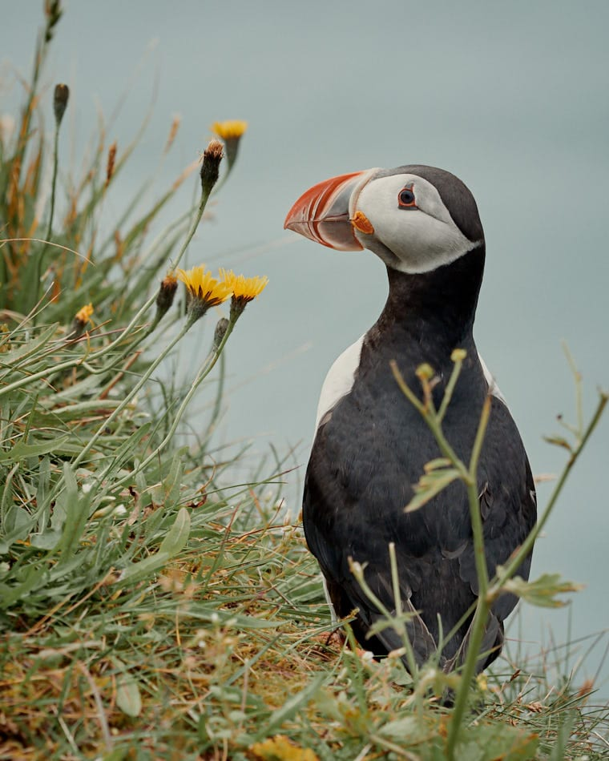
Dyrhólaey w południowej Islandii
Dyrhólaey to niewielki półwysep na południu Islandii, położony w pobliżu miejscowości Vík í Mýrdal. Przypuszcza się, że kiedyś była to oddzielna wyspa, która na skutek erupcji została przyłączona do stałego lądu. Na południowym wybrzeżu jest wiele atrakcji i miejsc do zobaczenia, ale z pewnością ten mały cypel powinien być jednym z nich. Powodem mogą być wyżej wspomniane maskonury, ale również powalające na kolana krajobrazy. Z półwyspu rozpościera się wspaniały, zapierający dech w piersiach widok na cztery strony świata. Na północy widać lodowiec Mýrdalsjökull. Na wschodzie widać Reynisdrangar, czyli czarne, bazaltowe skały wystające z wody, zwane skałami trolla. Legenda głosi, że gdy trolle wyciągały na ląd trójmasztowy statek, zaskoczył ich świt. Pierwsze promienie słońca na zawsze przemieniły ich w spiczaste formacje skalne. Po stronie zachodniej ciągnie się niekończące się czarne wybrzeże. Przed półwyspem natomiast znajduje się ogromy, skalny łuk, od którego półwysep wziął swoją nazwę. Dyrhólaey dosłownie oznacza Wzgórze z dziurką od klucza. Łuk ma 120 m wysokości, a pod nim, przy spokojnym morzu, mogą przepływać małe statki. Pogoda na Islandii jest bardzo zmienna. Te ciemne chmury widoczne na zdjęciach, nie wróżyły nam niczego dobrego. O ile spędzając czas na cyplu pogoda nam dopisała, o tyle ulewa dopadła nas 10 min późnej na plaży Reynisfjara.
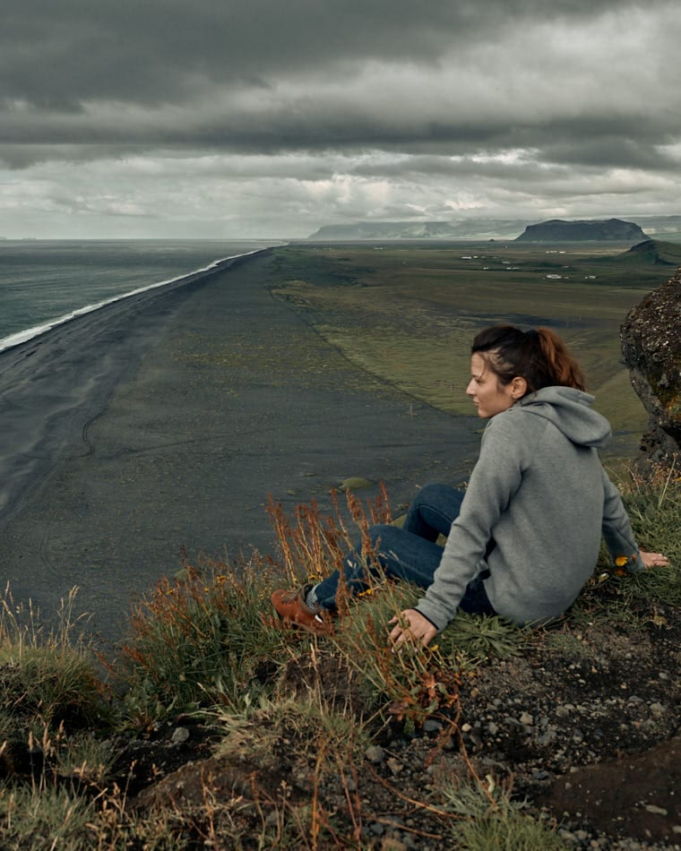
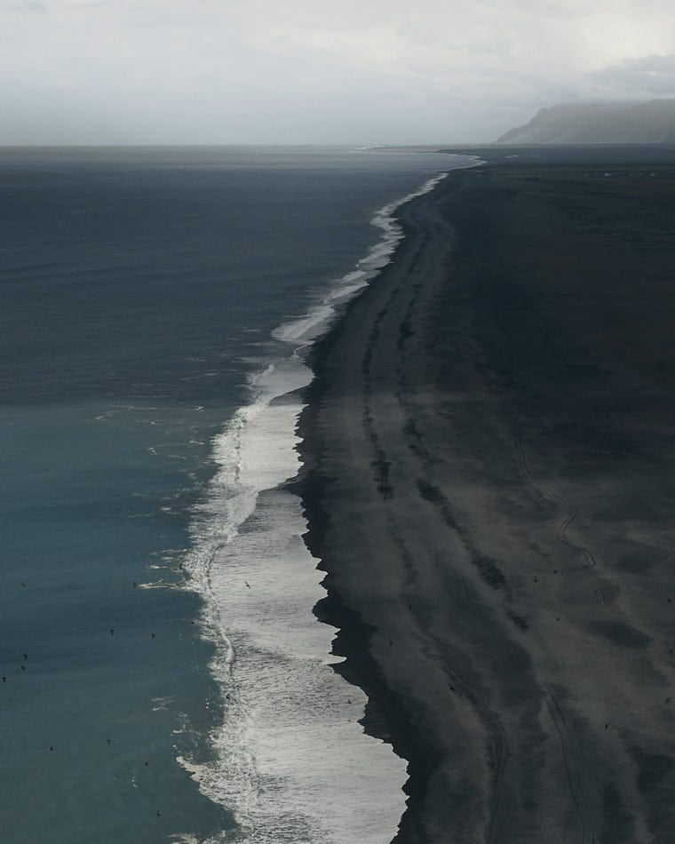
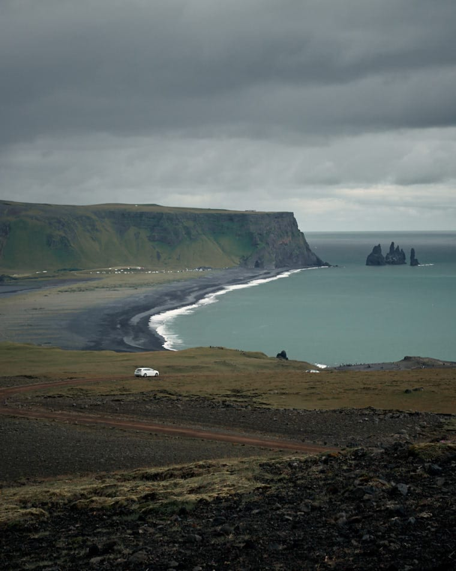
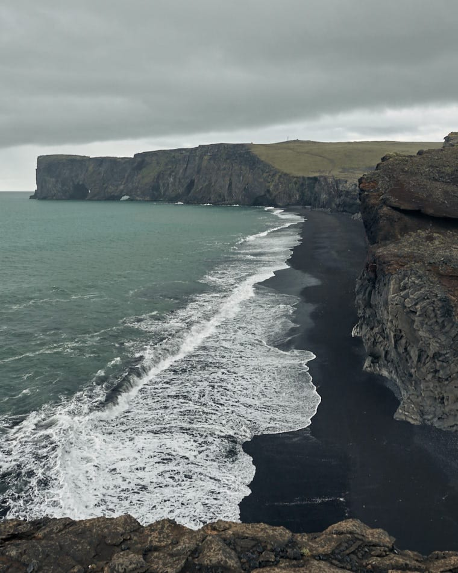
Zobacz również

Kopa Kondracka jesienną porą

Podobał ci się wpis? Masz jakieś pytania? Zostaw komentarz